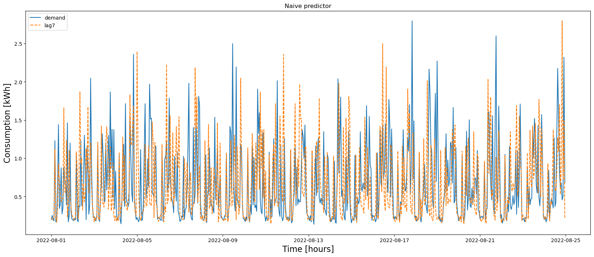
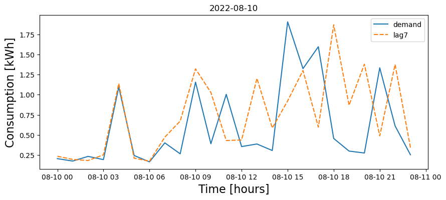
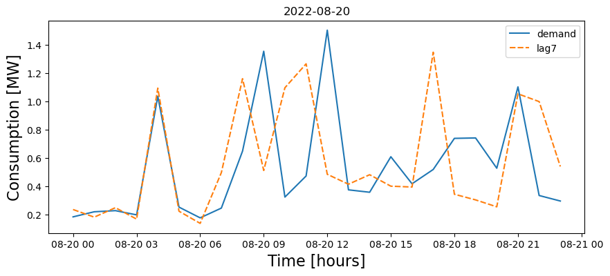

⚡️ Baseline Forecast: Lag‑7 Day#
Welcome! In this guided tutorial, we’ll build a simple but strong baseline for energy demand forecasting:
Lag‑7 (yesterday’s value from one week ago) ➜ a solid benchmark for daily/weekly seasonal loads.
What you’ll learn:
📥 Data loading & time indexing
🧹 Cleaning missing data
🧪 Train/validation/test splits
🧰 Feature engineering (lags/rolling)
🔮 Baseline: Lag‑7 prediction
📏 Metrics (MAE, RMSE, MAPE) and plots
✅ How to use this as a yardstick for fancier models later
Tip: Keep this baseline around! If a fancy model can’t beat Lag‑7, it’s probably overkill or mis‑specified.
🛠️ Setup & Imports#
We import core libraries for data handling (pandas, numpy), visualization (matplotlib/seaborn),
and metrics (sklearn.metrics). Keep it minimal and reproducible.
📊 Visualization & Diagnostics#
Plot actual vs predicted, residuals, and error distributions.
Look for bias (systematic under/over‑prediction) and seasonal drift.
import pandas as pd
import datetime
import matplotlib.pyplot as plt
import seaborn as sns
from sklearn.metrics import mean_absolute_percentage_error
import warnings
warnings.filterwarnings('ignore')
Read datasets#
📥 Load the Data#
Read raw time‑series, parse datetime, and set a meaningful index.
Ensure the frequency is clear (hourly/daily) and units are documented (e.g., kWh, kW).
🕒 Time Index & Frequency#
Make the DatetimeIndex consistent, set frequency, handle timezones, and align to the desired granularity.
This prevents subtle off‑by‑one errors later.
dataset = pd.read_csv('data/kaggle_competition_dataset.csv',
parse_dates=['time'])
dataset.set_index('time', inplace=True)
dataset.info()
<class 'pandas.core.frame.DataFrame'>
DatetimeIndex: 8592 entries, 2021-09-01 00:00:00 to 2022-08-24 23:00:00
Data columns (total 12 columns):
# Column Non-Null Count Dtype
--- ------ -------------- -----
0 temp 8592 non-null float64
1 dwpt 8592 non-null float64
2 rhum 8592 non-null float64
3 prcp 2159 non-null float64
4 snow 119 non-null float64
5 wdir 8592 non-null float64
6 wspd 8592 non-null float64
7 wpgt 8592 non-null float64
8 pres 8592 non-null float64
9 coco 8396 non-null float64
10 el_price 8592 non-null float64
11 consumption 8592 non-null float64
dtypes: float64(12)
memory usage: 872.6 KB
Features#
demand = dataset[['consumption']]
demand = demand.rename(columns = {'consumption':'demand'})
demand.head()
| demand | |
|---|---|
| time | |
| 2021-09-01 00:00:00 | 0.577 |
| 2021-09-01 01:00:00 | 0.594 |
| 2021-09-01 02:00:00 | 0.685 |
| 2021-09-01 03:00:00 | 1.016 |
| 2021-09-01 04:00:00 | 0.677 |
🧰 Feature Engineering (Light)#
Create interpretable signals:
🔁 Lags (e.g., 1, 24, 7×period for weekly seasonality)
📈 Rolling stats (mean/std/min/max)
📆 Calendar features (DoW, hour, holidays)
🔮 Baseline Model: Lag‑7#
Predict today using the value from 7 periods ago (e.g., 7 days for daily; 24×7 for hourly).
This leverages weekly seasonality, often surprisingly strong in buildings & homes.
lag7d = demand[['demand']].shift(24*7)
lag7d = lag7d.rename(columns = {'demand':'lag7'})
features = lag7d.copy()
features
| lag7 | |
|---|---|
| time | |
| 2021-09-01 00:00:00 | NaN |
| 2021-09-01 01:00:00 | NaN |
| 2021-09-01 02:00:00 | NaN |
| 2021-09-01 03:00:00 | NaN |
| 2021-09-01 04:00:00 | NaN |
| ... | ... |
| 2022-08-24 19:00:00 | 0.897 |
| 2022-08-24 20:00:00 | 2.796 |
| 2022-08-24 21:00:00 | 0.733 |
| 2022-08-24 22:00:00 | 1.490 |
| 2022-08-24 23:00:00 | 0.222 |
8592 rows × 1 columns
Forecast#
dataset = demand.join(features)
dataset.tail()
| demand | lag7 | |
|---|---|---|
| time | ||
| 2022-08-24 19:00:00 | 0.678 | 0.897 |
| 2022-08-24 20:00:00 | 0.457 | 2.796 |
| 2022-08-24 21:00:00 | 0.500 | 0.733 |
| 2022-08-24 22:00:00 | 2.321 | 1.490 |
| 2022-08-24 23:00:00 | 0.678 | 0.222 |
test_set = dataset[(dataset.index >= datetime.datetime(2022,8, 1))]
test_set
| demand | lag7 | |
|---|---|---|
| time | ||
| 2022-08-01 00:00:00 | 0.200 | 0.225 |
| 2022-08-01 01:00:00 | 0.253 | 0.201 |
| 2022-08-01 02:00:00 | 0.200 | 0.200 |
| 2022-08-01 03:00:00 | 0.183 | 0.225 |
| 2022-08-01 04:00:00 | 1.230 | 1.118 |
| ... | ... | ... |
| 2022-08-24 19:00:00 | 0.678 | 0.897 |
| 2022-08-24 20:00:00 | 0.457 | 2.796 |
| 2022-08-24 21:00:00 | 0.500 | 0.733 |
| 2022-08-24 22:00:00 | 2.321 | 1.490 |
| 2022-08-24 23:00:00 | 0.678 | 0.222 |
576 rows × 2 columns
📏 Evaluation Metrics#
Report multiple metrics:
MAE: average absolute error (units of target)
RMSE: penalizes large errors
MAPE: % error (watch out for near‑zero issues)
Add baseline vs model tables and quick plots for a fair comparison.
plt.figure(figsize=(20,8))
plt.title("Naive predictor")
p = sns.lineplot(data = test_set[['demand','lag7']]);
p.set_xlabel("Time [hours]", fontsize = 16);
p.set_ylabel("Consumption [kWh]", fontsize = 16);
print("MAPE: %.3f" % (mean_absolute_percentage_error(test_set['demand'], test_set['lag7'])*100))
MAPE: 69.962

predict_for_start = datetime.datetime(2022,8,10)
predict_for_end = predict_for_start + datetime.timedelta(days = 1)
test_day = test_set[(test_set.index >= predict_for_start) & (test_set.index < predict_for_end)]
plt.figure(figsize=(10,4))
plt.title(predict_for_start.date())
p = sns.lineplot(data = test_day[['demand','lag7']]);
p.set_xlabel("Time [hours]", fontsize = 16);
p.set_ylabel("Consumption [kWh]", fontsize = 16);
print("MAPE: %.3f" % (mean_absolute_percentage_error(test_day['demand'], test_day['lag7'])*100))
MAPE: 86.357

# holiday
predict_for_start = datetime.datetime(2022,8,20)
predict_for_end = predict_for_start + datetime.timedelta(days = 1)
test_day = test_set[(test_set.index >= predict_for_start) & (test_set.index < predict_for_end)]
plt.figure(figsize=(10,4))
plt.title(predict_for_start.date())
p = sns.lineplot(data = test_day[['demand','lag7']]);
p.set_xlabel("Time [hours]", fontsize = 16);
p.set_ylabel("Consumption [MW]", fontsize = 16);
print("MAPE: %.3f" % (mean_absolute_percentage_error(test_day['demand'], test_day['lag7'])*100))
MAPE: 63.332
